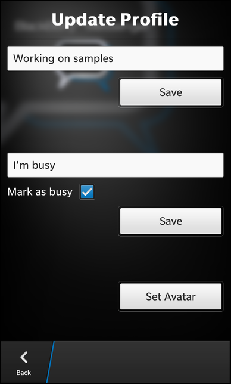

BBM Profile Example
Files:
- bbmprofile/assets/Field.qml
- bbmprofile/assets/UpdateProfile.qml
- bbmprofile/assets/profile.qml
- bbmprofile/assets/registration.qml
- bbmprofile/src/Profile.cpp
- bbmprofile/src/Profile.hpp
- bbmprofile/src/ProfileEditor.cpp
- bbmprofile/src/ProfileEditor.hpp
- bbmprofile/src/RegistrationHandler.cpp
- bbmprofile/src/RegistrationHandler.hpp
- bbmprofile/src/main.cpp
- bbmprofile/bbmprofile.pro
- bbmprofile/translations/bbmprofile.pro
Description
The BBM Profile example demonstrates how to retrieve and modify your user profile from the BBM Social Platform.


Overview
In this example we'll learn how to use the UserProfile class of the bb::platform::bbm module to retrieve your user profile from the BBM Social Platform and how to modify and publish the profile data.
To use the BBM Social Platform, the application must register first. How this is done is explained in bbmregistration and this sample is based on that code. We will describe here everything that needs to be done after the registration was successful.
The business logic of this application is encapsulated in the Profile class, which is exported to QML under the name '_profile'.
UI
The main UI of this application is shown after a successful registration.
The display profile page
It consists of one page with a couple of fields to display the single values of the user profile.
ImageView { preferredHeight: 300 preferredWidth: 300 image: _profile.displayPicture } Button { text: qsTr("Get Avatar") onClicked: { _profile.requestDisplayPicture() } }
At the top an ImageView and a Button are located to show and request the avatar. The image is provided through the 'displayPicture' property of the Profile object and is a placeholder by default. Only when the user clicks the button, the real avatar image is requested from the profile.
ImageView { verticalAlignment: VerticalAlignment.Center imageSource: "images/busy.png" visible: _profile.busy } Label { layoutProperties: StackLayoutProperties { spaceQuota: 1 } text: _profile.displayName textStyle { color: Color.White fontWeight: FontWeight.Bold } }
Below the avatar, an ImageView and a Label are located that show the current busy status and the name of the user. Depending of the value of the Profile's 'busy' property, the busy indicator is visible or hidden.
Field { title: qsTr("status message") value: _profile.statusMessage }
For all the other data of the profile, a Field is created, which is a custom component (implemented in Field.qml) with two Labels side by side. The left Label displays the title of the field and the right Label the corresponding value. All the profile data are provided by Profile through properties, which we simply bind against the Field's 'value' property.
ActionItem { title: qsTr("Update profile") onTriggered: { navigationPane.push(updateProfilePage.createObject()) } }
To modify the profile, the page contains an ActionItem in its action bar. Whenever the user triggers this action, an instance of the UpdateProfile page is created through a ComponentDefinition and pushed on the navigation pane.
attachedObjects: [ ComponentDefinition { id: updateProfilePage source: "UpdateProfile.qml" } ]
The update profile page
The update profile page is implemented in UpdateProfile.qml and consist of three sections.
TextField { id: personalMessage hintText: qsTr("Type personal message here") } Button { horizontalAlignment: HorizontalAlignment.Right text: qsTr("Save") onClicked: { _profile.editor.savePersonalMessage(personalMessage.text) navigationPane.pop() } }
The first section allows the user to change the 'personal message' of the profile. It contains a TextField where the user can type in the message and a Button to save the new message back to the profile. The actual storage is done in the C++ class ProfileEditor, which is made available to QML through Profile's 'editor' property. We simply invoke the savePersonalMessage() method with the message text as parameter. Afterwards we pop the page from the navigation pane.
TextField { id: statusMessage topMargin: 150 hintText: qsTr("Type status message here") } Container { layout: StackLayout { orientation: LayoutOrientation.LeftToRight } Label { text: qsTr("Mark as busy") textStyle { color: Color.White } } CheckBox { id: isBusy } } Button { horizontalAlignment: HorizontalAlignment.Right text: qsTr("Save") onClicked: { _profile.editor.saveStatus(isBusy.checked, statusMessage.text) navigationPane.pop() } }
The second section allows the user to change the status of the profile, which consists of the status message and the 'busy' status flag. The UI contains a TextField where the user can type in the message, a CheckBox to toggle the busy flag and a Button to save the status data back to the profile. If the user clicks the 'Save' button, we invoke the saveStatus() method with the busy flag and message text as parameter and afterwards we pop the page from the navigation pane.
Button { topMargin: 150 horizontalAlignment: HorizontalAlignment.Right text: qsTr("Set Avatar") onClicked: { filePicker.open() } }
The last section allows the user to change the avatar image. When the user clicks the 'Set Avatar' button, a FilePicker is opened.
attachedObjects: [ FilePicker { id: filePicker title: qsTr("Select Image") // We will allow the user to pick a file from available shared files. // This should only operate in the personal perimeter. directories: ["/accounts/1000/shared/"] onFileSelected: { _profile.editor.saveDisplayPicture(selectedFiles[0]) navigationPane.pop() } } ]
This picker is created as an attached object to the page and let the user select an image file from the shared folders. If the user selected an image, we invoke the saveDisplayPicture() method with the file path as parameter and pop the page from the navigation pane.
The Profile class
The Profile class encapsulates the information about the user profile and makes the data available through properties.
class Profile : public QObject { Q_OBJECT Q_PROPERTY(bool busy READ busy NOTIFY profileChanged) Q_PROPERTY(QString displayName READ displayName NOTIFY profileChanged) Q_PROPERTY(QString statusMessage READ statusMessage NOTIFY profileChanged) Q_PROPERTY(QString personalMessage READ personalMessage NOTIFY profileChanged) Q_PROPERTY(QString ppid READ ppid NOTIFY profileChanged) Q_PROPERTY(QString appVersion READ appVersion NOTIFY profileChanged) Q_PROPERTY(QString handle READ handle NOTIFY profileChanged) Q_PROPERTY(QString platformVersion READ platformVersion NOTIFY profileChanged) Q_PROPERTY(QVariant displayPicture READ displayPicture NOTIFY profileChanged) Q_PROPERTY(ProfileEditor* editor READ editor CONSTANT) public: Profile(bb::platform::bbm::Context &context, QObject *parent = 0); public Q_SLOTS: void show(); void requestDisplayPicture(); Q_SIGNALS: void profileChanged(); private: bool busy() const; QString displayName() const; QString statusMessage() const; QString personalMessage() const; QString ppid() const; QString appVersion() const; QString handle() const; QString platformVersion() const; QVariant displayPicture() const; ProfileEditor* editor() const; bb::platform::bbm::UserProfile* m_userProfile; bb::cascades::Image m_displayPicture; ProfileEditor* m_profileEditor; bb::platform::bbm::Context* m_context; };
Inside the constructor the member variables are initialized.
Profile::Profile(bb::platform::bbm::Context &context, QObject *parent) : QObject(parent) , m_userProfile(0) , m_context(&context) , m_profileEditor(0) { // Load the place holder for the display image (avatar) // Image by Decosigner: http://openclipart.org/detail/104977/help-orb-button-by-decosigner m_displayPicture = bb::cascades::Image(QUrl("asset:///images/avatarPlaceholder.png")); }
After a successful registration to the BBM service, the show() slot of the Profile class is invoked. The signal/slot connection for this is established in main.cpp
RegistrationHandler *registrationHandler = new RegistrationHandler(uuid, &app); Profile *profile = new Profile(registrationHandler->context(), &app); QObject::connect(registrationHandler, SIGNAL(registered()), profile, SLOT(show()));
Inside the show() slot a new UserProfile object is created. This does the low-level communication with the BBM service. We connect all change signals of the UserProfile object to our own change signal, so that our properties notify modifications as soon as the underlying UserProfile object is changed.
At the end of this method, the UI is loaded from profile.qml
void Profile::show() { // Grab the user's profile data m_userProfile = new bb::platform::bbm::UserProfile(m_context, this); // Create the editor for this user profile m_profileEditor = new ProfileEditor(m_userProfile, this); // Make sure the UI is updated whenever the profile changes connect(m_userProfile, SIGNAL(displayNameUpdated(QString)), this, SIGNAL(profileChanged())); connect(m_userProfile, SIGNAL(personalMessageUpdated(QString)), this, SIGNAL(profileChanged())); connect(m_userProfile, SIGNAL(statusUpdated(bb::platform::bbm::UserStatus::Type, QString)), this, SIGNAL(profileChanged())); connect(m_userProfile, SIGNAL(displayPictureUpdated(bb::platform::bbm::ImageType::Type, QByteArray)), this, SIGNAL(profileChanged())); // Create the UI QmlDocument* qml = QmlDocument::create("asset:///profile.qml").parent(this); qml->setContextProperty("_profile", this); AbstractPane* root = qml->createRootObject<AbstractPane>(); Application::instance()->setScene(root); }
Whenever the user clicks on the 'Get Avatar' button, the requestDisplayPicture() method is invoked. Inside this method we retrieve the raw image data from the UserProfile, create an Image object from them, since ImageView can only use that one as input, and emit the change notification signal to let the ImageView update its representation.
void Profile::requestDisplayPicture() { const QByteArray imageData = m_userProfile->displayPicture(); m_displayPicture = bb::cascades::Image(imageData); emit profileChanged(); }
In all the other property accessor methods, we simply return the values as we get them from the UserProfile object.
bool Profile::busy() const { return (m_userProfile->status() == bb::platform::bbm::UserStatus::Busy); } QString Profile::displayName() const { return m_userProfile->displayName(); }
The ProfileEditor class
The ProfileEditor class encapsulates the code to modify the user profile.
class ProfileEditor : public QObject { Q_OBJECT public: ProfileEditor(bb::platform::bbm::UserProfile* userProfile, QObject *parent = 0); public Q_SLOTS: void savePersonalMessage(const QString &personalMessage); void saveStatus(bool busy, const QString &statusMessage); void saveDisplayPicture(const QString &filePath); private: QPointer<bb::platform::bbm::UserProfile> m_userProfile; };
The class takes a pointer to the underlaying UserProfile object in its constructor and stores the pointer to later usage. Additionally it provides three slots to save the personal message, the status and the avatar image.
ProfileEditor::ProfileEditor(bb::platform::bbm::UserProfile* userProfile, QObject *parent) : QObject(parent) , m_userProfile(userProfile) { }
Inside the constructor we just initialize the member variable.
void ProfileEditor::savePersonalMessage(const QString &personalMessage) { if (!m_userProfile) return; m_userProfile->requestUpdatePersonalMessage(personalMessage); }
The savePersonalMessage() method just forwards the call to the UserProfile object.
void ProfileEditor::saveStatus(bool busy, const QString &statusMessage) { if (!m_userProfile) return; m_userProfile->requestUpdateStatus((busy? bb::platform::bbm::UserStatus::Busy : bb::platform::bbm::UserStatus::Available), statusMessage); }
In saveStatus() we also forward the call to the UserProfile object but convert the boolean 'busy' flag the the corresponding enum value first.
void ProfileEditor::saveDisplayPicture(const QString &filePath) { if (!m_userProfile) return; QFile file(filePath); if (!file.open(QIODevice::ReadOnly)) return; const QByteArray imageData = file.readAll(); bb::platform::bbm::ImageType::Type imageType = bb::platform::bbm::ImageType::Unsupported; if (filePath.endsWith(QLatin1String(".jpg"), Qt::CaseInsensitive) || filePath.endsWith(QLatin1String(".jpeg"), Qt::CaseInsensitive)) imageType = bb::platform::bbm::ImageType::Jpg; else if (filePath.endsWith(QLatin1String(".png"), Qt::CaseInsensitive)) imageType = bb::platform::bbm::ImageType::Png; else if (filePath.endsWith(QLatin1String(".gif"), Qt::CaseInsensitive)) imageType = bb::platform::bbm::ImageType::Gif; else if (filePath.endsWith(QLatin1String(".bmp"), Qt::CaseInsensitive)) imageType = bb::platform::bbm::ImageType::Bmp; m_userProfile->requestUpdateDisplayPicture(imageType, imageData); }
The saveDisplayPicture() method tries to open the passed file path and reads out the raw image data. Then it tries to detect the image type, depending on the file extension. In the last step the corresponding method of UserProfile is called to update the avatar, with the image type and raw data as parameters.